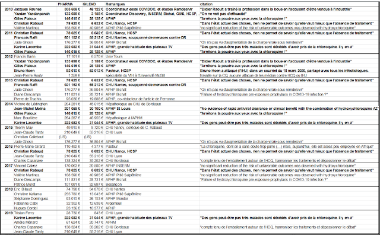

How a false hydroxychloroquine narrative was created, and more
It is remarkable that a large series of events taking place over the past months produced a unified message about hydroxychloroquine (HCQ), and produced similar policies about the drug in the US, Canada, Australia, NZ and western Europe.The message is that generic, inexpensive hydroxychloroquine (costing only $1.00 to produce a full course) is dangerous and should not be used to treat a potentially fatal disease, Covid-19, for which there are no (other) reliable treatments.
Hydroxychloroquine has been used safely for 65 years in many millions of patients.And so the message was crafted that the drug is safe for its other uses, but dangerous when used for Covid-19.It doesn't make sense, but it seems to have worked.
In the US, 'Never Trump' morphed into 'Never Hydroxychloroquine,' and the result for the pandemic is 'Never Over.'But while anti-Trump spin is what characterized suppression strategies in the US, the frauds perpetrated about hydroxychloroquine and the pandemic include most western countries.
Why do I say 'Never Over'?I am expanding on this claim with a), b), c) on August 30.Later in the paper additional evidence is provided.
a) Because if people were treated with HCQ at the onset of their illness, over 99% would quickly resolve the infection, avoiding progression to the late stage disease characterized by cytokine storm, thrombophilia and organ failure.Despite claims to the contrary, this treatment is very safe.(Yet outpatient treatment is banned in many US states.)UPDATE Jan 15: The CDC forgot to rewrite its guidance on malaria and hydroxychloroquine during Covid.CDC says hydroxychloroquine '
can be safely taken by pregnant women and nursing mothers... ' Only '
when it is used at higher doses for many years, a rare eye condition called retinopathy has occurred. '
b) If people were treated prophylactically with this drug (using only 2 tablets weekly) as is done in some areas and in some occupational groups in India, there would probably be at least 50% fewer cases after exposure.(Such treatment is currently banned in much of the US, including in my state of Maine.)
c) Protocols for in-hospital treatment (that were unknown during the initial peak of illness in the US and Europe) using HCQ and individually selected blood thinners, steroids, vitamins, zinc and other drugs such as used at NYU, have significantly reduced mortality of the very small number of people who might still progress to a serious illness.(The FDA, however, recommends against the use of HCQ outside of clinical trials, and the CDC and NIH recommend against it.)
If we followed a), b) and c) the result would be much briefer periods of infectiousness, lower viral loads, less severe illness and considerably less transmission.The R zero (average number of people each case infects) would drop below one and the pandemic would soon die out.
Were acts to suppress the use of HCQ carefully orchestrated?You decide.
Might these events have been planned to keep the pandemic going?To sell expensive drugs and vaccines to a captive population?Could these acts result in prolonged economic and social hardship, eventually transferring wealth from the middle class to the very rich?Are these events evidence of a conspiracy?
Here is a list of what happened, in no special order.Please help add to this list if you know of other actions I should include.This will be a living document, added to as new information becomes available.
I have penned this as if it is the 'To Do' list of items to be accomplished by those who pull the strings.The items on the list have already been carried out.One wonders what else might be on their list, yet to be carried out, for this pandemic.
1.You stop doctors from using the drug in ways it is most likely to be effective (in outpatients at onset of illness).You prohibit use outside of situations you can control.
Situations that were controlled to show no benefit included 3 large, randomized, multi-center clinical trials (Recovery, Solidarity and REMAP-Covid), the kind of trials that are generally believed to yield the most reliable evidence.However, each of them used excessive hydroxychloroquine doses that were known to be toxic and may have been fatal in some cases; see my previous articles here and here.And a 4th Chinese study that also used excessive doses (3.6 g HCQ in the first three days and 800mg/day thereafter, comparable to the above studies) also found no benefit from HCQ.
2.You prevent or limit use in outpatients by controlling the supply of the drug, using different methods in different countries and states.For example, in New York state, by order of the governor, hydroxychloroquine could only be prescribed for hospitalized patients.In Nevada, the governor outright prohibited
both prescribing and dispensing chloroquine drugs for a Covid-19 diagnosis.In New Jersey, the Department of Consumer Affairs required a positive test result before a chloroquine prescription could be dispensed or prescribed.Even back in March, pharmacy boards were coordinating to restrict its use.
France has issued a series of different regulations to limit prescribers from using it.France's Health Minister also changed the drugs' status from over-the-counter (OTC) to a drug requiring a prescription on January 13.
3.You play up the danger of the drug, emphasizing side effects that are very rare when the drug is used correctly.You make sure everyone has heard about the man who died after consuming hydroxychloroquine in the form of fish tank cleaner.Yet its toxicity at approved doses is minimal.Chloroquine was
added to table salt in some regions in the 1950s as a malaria preventive, according to Professor Nicholas White in his study for the Recovery trial.
4.You limit clinical trials to hospitalized patients, instead of testing the drug in outpatients, early in the illness, when it is predicted to be most effective.
Finally, but not until May, you have Fauci's NIAID conduct a trial in outpatients, using hydroxychloroquine plus azithromycin, but you only enroll 20 patients, after planning for 2,000.You reduce the duration of followup from 24 weeks to 13 days post treatment.You cancel the study after only 5 weeks, claiming inadequate enrollments, even though you have 11 study sites to enroll patients.
5.You design a series of clinical trials to give much too high a dose, ensuring the drug will cause harm in some subjects, sufficient to mask any possible beneficial effect.You make sure that trials in 400 hospitals in 35 countries (Solidarity) plus most hospitals in the UK (Recovery) use these dangerous doses, as well as additional sites in 13 countries (REMAP-Covid trial).There were additional Covid-19 trials that used similar excessive doses, such as PATCH, which I have not yet addressed.
6.You design clinical trials to collect almost no safety data, so any cause of death due to drug toxicity will be attributed to the disease instead of the drug.
7.You issue rules for use of the drug based on the results of the UK Recovery study, which overdosed patients.Of course the Recovery results showed more deaths in the hydroxychloroquine arm, since they gave patients 2.4 g in the first 24 hours, 800 mg/day thereafter.Furthermore, the UK has the 2nd highest death rate in the world for Covid-19 (Belgium is 1st), so simply conducting the trial in the UK may have contributed to the poor results.
8.You publish, in the world's most-read medical journal, the
Lancet , an observational study from a massive worldwide database named
Surgisphere (which includes 96,000 hospitalized Covid cases) that says use of chloroquine drugs caused significantly
increased
mortality.This was said to be the paper to end all controversy about HCQ and Covid-19.You make sure that all major media report on this result.This was to be the nail in the coffin for hydroxychloroquine.Then you quickly have 3 European countries announce they will not allow doctors to prescribe the drug.Soon additional countries ban its use for Covid.
9.You do your best to ride out any controversy over the veracity of this paper, never admitting culpability.Even after hundreds of people criticized this
Lancet observational study due to easily identified fabrications--the database used in the study did not exist, and the claimed numbers of cases did not agree with known numbers of cases--the
Lancet held firm for two weeks, which served to muddy the waters about the trial, until finally 3 of the 4 coauthors (but not the
Lancet nor the author who purportedly owned the database) retracted the study.Neither the authors nor the journal have admitted responsibility, let alone explained what it was that induced them to coauthor and publish such an obvious fraud.
You made sure very few media reported that the data were fabricated, the 'study' was fraudulent, and the drugs were actually safe.Even though the story of the database company, Surgisphere, was full of scandalous details, most media ignored it.The story of the study's retraction went largely unnoticed by the public.You made sure most people remember the original (false) story: that chloroquine and hydroxychloroquine frequently kill patients.
10.You ensure federal agencies like FDA and CDC hew to your desired policies.Some examples: a) FDA advised use only in hospitalized patients (too late) and later advised use restricted to only clinical trials (which are limited, are difficult to enroll in, have been halted prematurely, or may use excessive doses).
b) you have FDA make unsubstantiated and false claims, such as: '
Hospitalized patients were likely to have greater prospect of benefit (compared to ambulatory patients with mild illness) ' and claim the chloroquine drugs have a slow onset of action.If that were really true, they would not be used for acute attacks of malaria or in critically ill patients with Covid.(Disclosure: I once dosed myself with chloroquine for an acute attack of
P. vivax malaria, and it worked very fast.).
d) Despite the fact that Belgium's COVID treatment guidelines repeatedly mention that the doses of HCQ in the Recovery and Solidarity trials were 4 times the cumulative dose used in Belgium, you make sure the Belgian guidelines, paradoxically, only recommend use of HCQ within clinical trials.
11.You make sure to avoid funding/encouraging clinical trials that test drug combinations like hydroxychloroquine with zinc, with azithromycin, or with both, although there is ample clinical evidence that such combinations provide a cumulative benefit to patients.For example, one study that did look at this combination had no funding.
12.You have federal and UN agencies make false, illogical claims based on models (or invention) rather than human data.For example, you have the FDA state on June 15 that the dose required to treat Covid is so high it is toxic, after the Recovery and Solidarity trials have been exposed for toxic dosing.This scientific double-speak gives some legal cover to the clinical trials that overdosed their patients.According to Denise Hinton, RN, the FDA's Chief Scientist (yes, a registered nurse without scientific qualifications is the Chief Scientist at FDA), or perhaps a clumsy FDA wordsmith:
'Under the assumption that in vivo cellular accumulation is similar to that from the in vitro cell-based assays, the calculated free lung concentrations that would result from the EUA suggested dosing regimens are well below the in vitro EC50/EC90 values, making the antiviral effect against SARS-CoV-2 not likely achievable with the dosing regimens recommended in the EUA.The substantial increase in dosing that would be needed to increase the likelihood of an antiviral effect would not be acceptable due to toxicity concerns.'
In 2005, CDC researchers showed strong effects against SARS-1 at safely achievable concentrations.Here is the relevant quote,
'The infectivity of coronaviruses other than SARS-CoV are also affected by chloroquine, as exemplified by the human CoV-229E [15].The inhibitory effects observed on SARS-CoV infectivity and cell spread occurred in the presence of 1–10 μM chloroquine, which are plasma concentrations achievable during the prophylaxis and treatment of malaria (varying from 1.6–12.5 μM) [26] and hence are well tolerated by patients.'
Tellingly, JAMA editor Gordon Rubenfeld wrote in April, after the Brazilian study came out in JAMA,
'if you are prescribing HCQ after these JAMA results, do yourself and your defense lawyer a favor.Document in your medical record that you informed the patient of the potential risks of HCQ including sudden death and its benefits (???).'
13.You create an NIH Guidelines committee for Covid treatment recommendations, in which 16 members have or had financial entanglements with Gilead, maker of Remdesivir.The members were appointed by the Co-Chairs.Two of the three Co-Chairs are themselves financially entangled with Gilead.Are you surprised that their guidelines recommend specifically against the use of hydroxychloroquine and in favor of Remdesivir, despite a Chinese Phase III study showing no benefit, which was mistakenly posted on the WHO website, then taken down?The guidelines authors deem their recommendations the new 'standard of care.'Additional remdesivir studies have shown no clear mortality benefit.
14.You frighten doctors so they don't prescribe hydroxychloroquine, if prescribing it is even allowed in their jurisdiction, because prescribing outside the new NIH 'standard of care' leaves them open to both malpractice lawsuits and potential loss of license.For example, Michigan's Medical Licensing Board issued the following:
'Prescribing hydroxychloroquine or chloroquine without further proof of efficacy for treating COVID-19 or with the intent to stockpile the drug may create a shortage for patients with lupus, rheumatoid arthritis, or other ailments for which chloroquine and hydroxychloroquine are proven treatments.Reports of this conduct will be evaluated and may be further investigated for administrative action...It is also important to be mindful that licensed health professionals are required to report inappropriate prescribing practices.'
In other words, Michigan pharmacists are required to snitch on doctors prescribing the drugs for Covid.
You further tell doctors (through the FDA) they need to monitor a variety of lab parameters and EKGs when using the drug, although this was never advised before, which makes it very difficult to use the drug in outpatients.You have the European Medicines Agency issue similar warnings.In Australia only physicians in certain specialties are allowed to prescribe the drug for Covid.And in Queensland, physicians or pharmacists who do not comply (for example, by prescribing the drug for prevention of Covid) face up to 6 months' imprisonment and a fine up to $13,000 Australian dollars.
15.You manage to control the conduct of most trials around the world by specially designing the WHO-managed Solidarity trials, currently conducted in 35 countries.WHO halted hydroxychloroquine clinical trials around the world, twice.The first time, May 25, WHO claimed it was in response to the (fraudulent)
Lancet study.The second time, June 17, WHO claimed the stop was in response to the Recovery trial results.Recovery used highly toxic doses of hydroxychloroquine in over 1500 patients, of whom 396 died.You stop the trial before the data safety monitoring board has looked at your data, a move that is unlikely to be consistent with trial protocol.WHO's trial in over 400 hospitals overdosed patients with 2.0 g hydroxychloroquine in the first 24 hours.The trial was halted 3 days after the toxic doses were exposed (by me).The trial involved doctors around the world typing minimal patient information into an online WHO platform, which assigned the patient a treatment.
The only 'safety' information collected during the trial was whether patients required oxygen, required a ventilator, or died.This effectively masked the adverse effects of the drugs tested.
I should mention that WHO's initial plan for its Solidarity trial entirely omitted the chloroquine drugs, but they were added at the urging of participating nations.WHO's fallback position appears to have been to use toxic doses.
18.You make sure that the most-consulted US medical encyclopedia, UptoDate, advises physicians to restrict hydroxychloroquine to only clinical trials, citing the FDA.
19.You have the head of the Coronavirus Task Force, Dr. Tony Fauci, insist the drug cannot be used in the absence of strong evidence...while he insisted exactly the opposite in the case of the MERS coronavirus outbreak several years ago, when he recommended an untested drug combination for use...which had been developed for that purpose by his agency.And while he was bemoaning the lack of evidence, he was refusing to pay for trials to study hydroxychloroquine, and cancelled two NIAID-sponsored trials of outpatient HCQ before completion.And he changed the goalposts on the Remdesivir trial, not once but twice, to make Remdesivir show a tiny bit of benefit, but no mortality benefit.Yet don't forget, Fauci was thrilled to sponsor a trial of a Covid vaccine (partly owned by his agency) in humans, before there were any data from animal studies.So much for Fauci's requirement for high quality evidence, before risking use of drugs and vaccines in humans.
20.You convince the population that the crisis will be long-lasting.You have the 2nd richest man in the world, and biggest funder of the WHO, Bill Gates, keep repeating to the media megaphone that we cannot go back to normal until everyone has been vaccinated or there is a perfect drug.(The Gates Foundation helped design the WHO Solidarity trial, which says only that it has multiple funders, helped fund the Recovery trial, and Gates is heavily invested in Covid pharmaceuticals and vaccines.)
21.You have CDC (with help from FDA) prevent the purchase of coronavirus test kits from Germany, China, WHO, etc, and fail to produce a valid test kit themselves.The result was that during January and February, US cases could not be tested, and for months thereafter insufficient and unreliable test kits made it impossible to track the epidemic and stop the spread.
22.You have trusted medical spokesmen lie to the public about the pandemic's severity, so precautions weren't taken when they might have been more effective and less long-lasting.Congress was repeatedly briefed about the pandemic in January and February, which scared several Congress members enough that they sold off large amounts of stock, risking insider trading charges.Senator Burr is one of them, currently under investigation for major stock sales on February 13.
Yet Dr. Fauci told USA Today on February 17 that Americans should worry more about the flu than about coronavirus, the danger of which was 'just miniscule.'Then on February 28, Drs.Fauci and Robert Redfield (CDC Director) wrote in the
New England Journal :
'...the overall clinical consequences of Covid-19 may ultimately be more akin to those of a severe seasonal influenza (which has a case fatality rate of approximately 0.1%) or a pandemic influenza (similar to those in 1957 and 1968) rather than a disease similar to SARS or MERS, which have had case fatality rates of 9 to 10% and 36%, respectively.'
23.You destroy the reputation of respected physicians who stand in your way.Professor Didier Raoult and his team in Marseille have used hydroxychloroquine on over 4,000 patients, reporting a mortality rate of about 0.8%.(The mortality rate of patients given hydroxychloroquine in the Recovery trial was 25.7%.)Raoult is very famous for discovering over 100 different microorganisms, and finding the long-sought cause of Whipple's Disease.With this reputation, Raoult apparently thought he could treat patients as he saw fit, which he has done, under great duress.Raoult was featured in a New York Times Magazine article, with his face on the magazine cover, on May 12, 2020.After describing his considerable accomplishments, the Times very unfavorably discussed his personality, implied he conducted unethical trials without approval, and using anonymous sourcing produced a detailed hit piece.Raoult is now considered an unreliable crank in the US.
You gather a group of Yale professors to dispute their Yale professor colleague Harvey Risch, an MD, PhD epidemiologist, on his publications and vocal support of the benefits of HCQ for Covid.Their first argument is that he is not an infectious disease doctor.Notably, the first signer of the statement opposing Dr. Risch is an economist.
Physician and state senator Scott Jensen of Minnesota is being investigated by his state medical board due to anonymous complaints about 'spreading misinformation' and giving 'reckless advice' about COVID in interviews.Jensen was previously selected as 'Family Physician of the Year' in his state.Now his medical license is at risk, not because of how he treated a patient, but for what he said outside of the office.Unprecedented.
'YouTube will ban any content containing medical advice that contradicts World Health Organisation (WHO) coronavirus recommendations.Anything that would go against World Health Organisation recommendations would be a violation of our policy.'
25.When your clinical trials are criticized for overdosing patients, you quickly have Oxford-affiliated, Wellcome Trust-supported scientists at Mahidol University publish papers (a literature review with modeling and a modeling study) purporting to show that the doses used were not toxic.You develop a new method to measure hydroxychloroquine in a handful of Recovery patients who were not poisoned.However, there are 2 problems you forgot with this approach:
26.You change your trial's primary outcome measures after the trials have started, in order to prevent detection of drug-induced deaths (Recovery) or to make your drug appear to have efficacy (NIAID Remdesivir trial).
27.You stop manufacturers from supplying the drug.Shortly after the fraudulent
Lancet paper came out, Sanofi announced it would no longer supply the drug for use with Covid, and would halt its two hydroxychloroquine clinical trials.One of the cancelled Sanofi trials was expected to test 210 outpatients early in the course of disease.The trial remains suspended at the time of writing, while the Lancet paper was retracted 13 days after publication.You surely don't want a trial of hydroxychloroquine treatment early in the disease, since it might show an excellent effect.
Sanofi, the supplier of one of the hydroxychloroquine products marketed in Australia (Plaquenil), has also written to health professionals reinforcing that hydroxychloroquine is not approved for use in Australia for treatment of COVID-19 outside the confines of a clinical trial.Sanofi also reinforced some of the known risks of prescribing hydroxychloroquine, in particular potentially serious cardiac issues.Globally, Sanofi has received an increased number of reports of serious cardiac issues, including deaths, in patients treated with hydroxychloroquine, This appears to be more common in patients also treated with other medicines that can affect the heart.
Then Sanofi started collecting information on all off-label use of hydroxychloroquine in New Zealand and Australia.Why is Sanofi, a drug manufacturing company, becoming a surveillance/enforcement mechanism intended to frighten medical providers from using the drug for Covid, which use is by definition 'off label.'Sanofi alternatively suggests one may report (anonymously or not) others' off-label use to New Zealand's Pharmacovigilance Center or the Australian equivalent.
30.You can get your experimental, unlicensed drugs tested, much more expeditiously and cheaply than under ordinary circumstances, on Covid patients in large clinical trials, but only as long as no drug is designated effective for the condition.This opportunity only lasts while the 'standard of care' for early Covid disease is nothing more than supportive measures, since no drug is deemed effective.
31.You have a research organization with big Pharma members (A.O.K.I.) pressure the Russian Ministry of Health to remove hydroxychloroquine from its treatment guidelines.
32.You stopped use of hydroxychloroquine, allegedly in response to the fabricated Lancet study, in France, Italy and Belgium (countries with very high COVID mortality rates) then Portugal then Switzerland.But Switzerland restarted using HCQ 15 days later.This created a natural experiment in Switzerland.About 2 weeks after hydroxychloroquine use was halted, death rates approximately tripled, for about 15 days.Then, after its use was allowed again, two weeks later death rates from Covid fell back to their baseline.(Thanks to
FranceSoir:
33.You reverse an old trick of clinical trials, to mask benefit of hydroxychloroquine.The trick was to replace the saline placebo with a substance that is being used by many clinicians and in many trials against Covid, thus by comparison likely to reduce the positive effect of your tested medication.This was done in trials both at NYU and at University of Washington, using vitamin C or vitamin C plus folate respectively as placebos.
34.You have the chief medical officers of Wales, England, Scotland and Northern Ireland, and the director of the UK's National Health Service, write to UK doctors, a) urging them to enroll their Covid patients in one of 3 national clinical trials, two of which greatly overdosed patients with hydroxychloroquine, and b) stopping their use of 'off license treatments' outside of a trial.Yet again, we encounter a veiled threat against clinicians actually attempting to treat the primary SARS-Cov-2 infection.The chief doctors wrote:
While it is for every individual clinician to make prescribing decisions, we strongly discourage the use of off-licence treatments outside of a trial, where participation in a trial is possible... Any treatment given for coronavirus other than general supportive care, treatment for underlying conditions, and antibiotics for secondary bacterial complications, should currently be as part of a trial, where that is possible.'
35.You have a state Pharmacy Board refuse to dispense hydroxychloroquine outside of clinical trials on June 15, citing the FDA recommendation for use only in trials.You issue this new regulation on the same day that FDA publishes its recommendation, indicating prior coordination.But when your regulation is exposed on July 14, you immediately rescind it.
37.A group of doctors went to Washington DC July 27-28.They called themselves 'America's Frontline Doctors' and gave a press conference and livestream talks about the Covid-19 pandemic as well as about the need for physicians to be able to prescribe HCQ freely.While the media sparsely attended the press conference, the livestream got millions of views.And within hours, their livestream was banned by Google, YouTube, Facebook and Twitter.Twitter was said to additionally ban comments about its ban.Then Squarespace took down the Frontline Doctors' website.
38.After the HCQ issue got so much attention on social media, you impose another ban on July 29 on the prescribing of HCQ for Covid, starting July 30 in Ohio, using its Pharmacy Board to dictate to physicians what they may not prescribe.(A repeat of #35 in a different state.)Ohio, with the governor's approval, had first limited hydroxychloroquine dispensing on March 22.At least 3 other states limited its dispensing at the same time.
This ban got so much attention that Republican Governor Mike DeWine rescinded it the next morning.DeWine claimed to agree with FDA Commissioner Stephen Hahn, who said in a July 30 TV interview that the prescribing of HCQ is between a doctor and patient.This is in accord with FDA law; but then, why was FDA silent when pharmacy boards, governors and other state entities prevented the prescribing of this FDA-approved drug in their jurisdictions?
39.After having Google take down physician James Todaro's article on hydroxychloroquine for 4 months, you allow it to resurface right before Google's (and Facebook's and Amazon's and Apple's) CEOs testify before Congress on July 29 on censorship and abuse of power.You have Twitter warn that Todaro's article is at an unsafe link.
40.After massive attention to the banning of the videos posted by the physician group 'America's Frontline Physicians' and its website, you make intense efforts to discredit the physicians involved.
MedPageToday claimed it '
could find no evidence that any of the speakers worked in hospitals with significant numbers of COVID-19 patients. ' But the doctors claimed they used the drug early and prevented hospitalizations and deaths.With over 4.4 million Americans diagnosed with Covid, what doctor
hasn't seen a Covid patient?
USAToday blared the headline: 'America's Frontline Doctors' may be real doctors, but experts say they don't know what they're talking about.
You have USA Today review and publish detailed information on the licenses, practice locations and malpractice histories of the doctors who spoke out.USAT reporters claim these doctors are not experts and lack knowledge about the use of HCQ in Covid-19, despite the fact that most work in primary care, urgent care or emergency medicine and report using the drug for Covid.Yet no one asks how many years ago 'expert' Tony Fauci last treated a patient?'Expert' Deborah Birx' medical license expired in 2014, so she hasn't treated a Covid patient either.BTW, she worked in Fauci's lab between 1983 and 1986.
41.Hydroxychloroquine use is truly the wedge issue for understanding and turning around the pandemic.If hydroxychloroquine works reasonably well as a prophylactic and treatment for Covid-19, it could potentially end the severity of the pandemic, greatly reduce transmission, and return us to life as we knew it.You must make use of the levers of government, plus mainstream media and social media, to stop that from happening.
So, just in case doctors thought the Frontline Doctors' video, or a new study from Spain showing the drug's usefulness meant they should use hydroxychloroquine to treat Covid, you must act fast.You use Representatives at a Congressional health subcommittee hearing on July 29 to threaten doctors about one use of the drug last April, in veterans who were nursing home patients.Per the Washington Post:
'doctors at the 238-bed nursing home dosed [30] patients with what came to be called a 'covid cocktail' for more than two weeks in April, often over the objections of nurses and without the full knowledge of residents’ families.At least 11 residents received the drug even though they had not been tested for covid-19, The Post found.'
I have treated patients in nursing homes, and one rarely discusses medication changes with family, unless the patient is seriously ill.When nursing home residents were dying like flies last April, when tests were hard to come by, and confirmed diagnoses few and far between, doctors used this medicine to try to prevent nursing home deaths during a pandemic.And now they are being scapegoated for doing so.
The WaPo article does not even tell us whether the patients survived, thrived or were harmed.The article hardly makes sense.Its only purpose is to blacken the drug and the physicians who use it.
Yet on August 27, with respect to HCQ's use in nursing homes, Senators Warren, Wyden and Casey demanded that FDA and Medicare/Medicaid explain how they are tracking it, and also demanded an Inspector General investigation into its recent use in nursing homes.
' The Trump Administration owes us answers on the use of an ineffective drug like hydroxychloroquine in nursing homes — the epicenter of the pandemic,' Elizabeth Warren said in a statement.
43.You have Dr. Fauci discredit published observational studies that show benefit during a Congressional hearing, demanding randomized controlled trials.Fauci never tells the Committee he has cancelled the one randomized controlled trial of HCQ that his agency, NIAID, had promised to conduct on HCQ.NIAID claimed that it could not enroll enough subjects, and the study was cancelled after only 20 were enrolled.However, Fauci told the Committee that 250,000 Americans have shown interest in participating in trials of a Covid vaccine.It is difficult to reconcile such extreme lack of interest in a treatment trial, and such massive interest in a vaccine trial.
Doctors who wrote studies showing HCQ benefit, even when used late (50% mortality reduction) have defended their work from Fauci's criticism of it to Congress.
44.You erode the doctor's primary responsibility to the patient, replacing it with the need to perform clinical research.This is the first time I have ever heard such a thing in the US: research physicians are pressuring frontline doctors not to veer from protocol-determined treatment, even when patients enrolled in treatment trials are at risk of death.'Helping future patients' is the rationale provided.
Need I say this was the justification for the Nazi doctors' experiments?It was not accepted at Nuremberg and it shouldn't be accepted now.Medical ethics are no mystery.As published in the JAMA, and accepted worldwide, the World Medical Association's Declaration of Helsinki, a.k.a. 'Ethical Principles for Medical Research Involving Human Subjects' states,
While the primary purpose of medical research is to generate new knowledge, this goal can never take precedence over the rights and interests of individual research subjects.
One of the Nuremberg Principles says essentially the same thing.
45.You use the term 'stellar' to describe the Recovery trial in the August 5, 2020 NY Times, but avoid any hint that the Recovery trial's hydroxychloroquine arm gave 1500 patients a toxic, potentially lethal dose, of whom over 25% died.
46.You censure and oust from the Detroit Democrats a state legislator because she credited HCQ for saving her life when she had Covid-19, and she publicly thanked President Trump for bringing the drug to her attention.It had been extremely difficult for her to obtain the drug, because her governor, Gretchen Whitmer, had banned use of the drug for Covid.
47.Despite assuring you control the outcome of the vast majority of randomized clinical trials of the chloroquine drugs, you have been thwarted by physician researchers in Detroit, Spain, Italy, France, Saudi Arabia who publish their observational results with hydroxychloroquine, showing the drug dramatically reduces mortality from Covid.
Doctors in Turkey, the US and Canada, and the US show that HCQ's cardiac toxicity is negligible.So you have frontman Tony Fauci repeatedly dismiss this evidence from thousands of patients, since it did not come from randomized controlled trials.See c19study.com for a compilation of 99 (58 peer reviewed) studies of the chloroquine drugs in Covid-19, and convince yourself what the overall data truly show.
48.You have Wikipedia write the following about Covid and HCQ:
' all clinical trials conducted during 2020 found it is ineffective and may cause dangerous side effects .' The footnotes refer to only a handful of trials, while a compilation of all 99 studies (of different types, including meta-analyses and observational studies) on the drug in Covid-19 tells a completely different story.
which hosts a collection of academic papers.The article rapidly disappeared from the link.Here is a brief description of the article:
Meta analysis of 41 studies concluding: 'HCQ has been shown to have consistent clinical efficacy for COVID-19 when it is used early in the outpatient setting, and in general would appear to work better the earlier it is used.Overall HCQ is effective against COVID-19.There is no credible evidence that HCQ results in worsening of COVID-19.HCQ has been shown to be safe for the treatment of COVID-19 when responsibly used.'A reader (later) sent me another working link for the full text here.
50.Can we begin to connect the dots between those who fraudulently suppressed effective treatments for Covid-19, and those who wish to maintain the pandemic crisis to remake the world?Today, on 9/11, Oxford epidemiologist Dr.Peter Horby, a principal investigator for the Recovery trial in which 396 people who were overdosed with hydroxychloroquine died, retweeted a tweet from the World Economic Forum about the environmental benefits of using bicycles.Horby added, 'This is where we need to be headed.'
51.From Anthony Fauci, who has perhaps done more than any other person to besmirch the value of HCQ and prevent Covid patients being treated effectively, comes a statement that seems to hearken to the World Economic Forum sentiment in #50 above.Fauci blames the pandemic (which his actions prolong) on humans damaging nature.And he suggests we must learn to live differently, in harmony with nature.
And now, suddenly, I understand why it is so important to claim the pandemic came from human encroachment on bat territory, and not from a lab accident.Because human encroachment is being positioned to take the blame for Covid-19.(SARS-1, Ebola and SARS-2 are claimed to have arisen from humans living too close to bats, eating them and getting infected, starting epidemics--but this has not been proven for either SARS epidemic, nor proven for the Ebola epidemics.).This is not Fauci waxing eloquent about nature.This is Fauci, America’s Doctor, starting the conversation about how the human population, not the bat virus, is the real underlying problem.
The quote below was published in the journal Cell, in the final paragraph, on September 3 by Fauci and Morens:
'The COVID-19 pandemic is yet another reminder, added to the rapidly growing archive of historical reminders, that in a human-dominated world, in which our human activities represent aggressive, damaging, and unbalanced interactions with nature, we will increasingly provoke new disease emergences.We remain at risk for the foreseeable future.COVID-19 is among the most vivid wake-up calls in over a century.It should force us to begin to think in earnest and collectively about living in more thoughtful and creative harmony with nature, even as we plan for nature’s inevitable, and always unexpected, surprises.'
Are they hinting that a reduced human population will be less susceptible to pandemics?Or that rural populations need to move?
52.Even though the famous Mehra/Desai Lancet paper claiming HCQ and CQ caused hugely increased deaths was exposed as a total fabrication by the Lancet editor and retracted on June 4, the Washington Post today, on September 11, links to its favorable May 22 story about the Mehra/Desai paper--using it as the sole evidence for yet another false claim of the danger of hydroxychloroquine.
This despite the fact that the WaPo reported on June 2 about concerns regarding the paper's authenticity.The New York Times ran at least 3 articles about the fabricated Mehra/Desai paper here, here and here, and you know the WaPo reads what the NYT reports.You neuter criticism electronically by making it hard to read.I commented on the 9/11 article in the WaPo, and its gratuitous slur against HCQ, in which WaPo cited as authority a fabricated paper.I used the online comment form.I am a subscriber.The WaPo printed my comment, but my comment seems to be the only comment whose words extend beyond the right margin, and are chopped off.How odd.
53.When all else fails, would you really try to blow up much of the world supply of hydroxychloroquine?
According to the Taiwan English News:
An explosion at a pharmaceutical factory in Taoyuan City left two injured and caused a fire early this afternoon, December 20...
Liberty Times reported that the factory produces hydroxychloroquine APIs, and is the world’s second largest HCQ raw material supplier.
Another source tells the same tale.The Pharmaceutical company is named Sci Pharmtech Inc.The explosion was huge and spread to five other companies.
54.Big mistake.You meant to expunge all official information about the safety of hydroxychloroquine.But you forgot to remove CDC's malaria treatment guidance, which still tells the truth about the drug.A 2 page information sheet is available online on the CDC website.It might disappear after I post this.CDC's guidance states,
'Who can take hydroxychloroquine?Hydroxychloroquine can be prescribed to adults and children of all ages.It can also be safely taken by pregnant women and nursing mothers. What are the potential side effects of hydroxychloroquine?Hydroxychloroquine is a relatively well tolerated medicine.The most common adverse reactions reported are stomach pain, nausea, vomiting, and headache.These side effects can often be lessened by taking hydroxychloroquine with food.Hydroxychloroquine may also cause itching in some people.All medicines may have some side effects.Minor side effects such as nausea, occasional vomiting, or diarrhea usually do not require stopping the antimalarial drug.If you cannot tolerate your antimalarial drug, see your health care provider; other antimalarial drugs are available. How long is it safe to use hydroxychloroquine?CDC has no limits on the use of hydroxychloroquine for the prevention of malaria.When hydroxychloroquine is used at higher doses for many years, a rare eye condition called retinopathy has occurred.People who take hydroxychloroquine for more than five years should get regular eye exams.
55.Twitter censored the Brazilian Ministry of Health for tweeting to citizens that they should seek early treatment for Covid, as the sooner they get treated, the better the result.(The harmful US recommendation is to stay home and do nothing until you require hospitalization.)
56.You have the WHO issue guidance that HCQ should not be used for Covid, based on 6 multicenter trials that included over 6,000 patients.Six!Scores of trials using much larger numbers of patients demonstrated benefit, but these were omitted from the WHO review.
Of course, included in these six trials (and accounting for about half the patients in WHO's review) are the Recovery and Solidarity trials that overdosed subjects on hydroxychloroquine and caused 10-20% higher mortality than in the placebo subjects who received no treatment!
If effect, WHO is confirming that when you poison patients with excessive doses they do not do well.I concur that poisonous doses of HCQ or anything else should never be used in patients.
Will WHO comment on the only real question, which is the value of using therapeutic doses early in the course of illness?The results of over 200 studies speak for themselves.
Why aren't the families of subjects who died in these trials bringing charges?Was information on which drugs their family members received withheld from them to prevent that from happening?
57.The Bill and Melinda Gates Foundation is still up to their dirty tricks smearing hydroxychloroquine.Yet another paper has come out of U.Washington, paid for by BMGF, that claims HCQ isn't helpful for early treatment (despite dozens of studies to the contrary).If you read the new paper carefully, you learn that HCQ actually did help, but the authors massaged the data to remove statistical significance... and shut the trial down prematurely.My analysis is here.
58.It is important to keep banging the drum that says, not only don't the drugs work, but they are dangerous, to boot.And so we have a new meta-analysis designed to do just that.
1.Never admit there was anything wrong with the trials that overdosed patients with hydroxychloroquine or chloroquine.In fact, these authors called the
Recovery and
Solidarity trials that gave patients 4 times the normal dose of HCQ at first, 'pragmatic.'Odd use of verbiage.
2.Cherry pick a small number of studies from which to perform your meta-analysis, so that the number of subjects in the overdose studies outweighs the number in all the other trials.In this case 67% of all subjects in this meta-analysis (which included about 14 of 233 total trials) had been enrolled in the
Recovery and
Solidarity overdose trials.Two other overdose studies were included, PATCH and Remap-CAP.(PATCH abruptly ended after only 5 subjects were enrolled, once the other overdose trials were exposed.)
3.Because the 3 overdose studies (except PATCH, in which none of the 5 died) had a higher proportion of deaths in the hydroxychloroquine arms than in the placebo arms, and provided more than two thirds of the subjects for this meta-analysis, the authors of the meta-analysis were able to conclude that using HCQ is associated with higher death rates than using nothing at all.
4.Incredible that the toxic doses used in 4 of the trials selected are whitewashed by calling them 'relatively high doses' and never linking these doses to the increased death rates.
5.Another odd thing is that investigators from the included trials, whose data were used in this study, are listed as coauthors.There are 94 coauthors, all of whom signed off on the final paper (i.e., the overdose investigators had the opportunity to craft the language of this paper to cover their butts regarding their overdose trials).
6.Many of these investigators have financial interests in products and/or companies making new products for which hydroxychloroquine would be a cheap competitor.
Remember: the system would not be going to these lengths
if hydroxychloroquine didn't work. Please think about that.
I am starting a new 'live' list of ways in which the people are pushing back against the abrogation of our rights, the propagation of lies, and our ability to access the medical care we choose.Please help contribute to it.
1.A huge
Thank You goes to
FranceSoir , which has covered the hydroxychloroquine restrictions in a long series of articles, has done the digging that the mainstream media refuses to do, and has brought the issue before a judge.The judge ruled that a Press Release issued on May 27 by France's Minister of Solidarity and Health, informing doctors they cannot use hydroxychloroquine for Covid, has no legal meaning, and cannot restrict the prescribing of medicines by France's medical providers.
3.Skye News Australia presents information on the effective responses to the pandemic in Sweden and Switzerland.The pandemic is over in Sweden.Switzerland proved (again) the benefits of HCQ used at the proper dose, in conjunction with other drugs/supplements.
'The destruction of our economies was completely pointless.'
4.The statistical methods of 3 major, randomized controlled trials of hydroxychloroquine efficacy in Covid have been questioned by a large group of statisticians, researchers and clinicians.All 3 trials were inadequately powered, with large p values.In fact, evaluated differently, '
the evidence from all these trials points to [HCQ] treatment effectiveness ' according to the group of professionals providing the critique.
5.The assertion that antibodies only last a few months, and therefore immunity wanes rapidly, seems to be another misleading claim from the fake-science influencers.As with many other viruses, T and B lymphocytes are critical for coronavirus immunity, and a lot more durable than antibodies.From a U.Washington study, '
the SARS-CoV-2-specific memory lymphocytes exhibited characteristics associated with potent antiviral immunity: memory T cells secreted IFN-γ and expanded upon antigen re-encounter, while memory B cells expressed receptors capable of neutralizing virus when expressed as antibodies. '
6.The governor of Minnesota on August 12 rescinded his state's ban on the use of hydroxychloroquine and chloroquine for Covid.
7.Three US Senators demand answers from the FDA on what evidence it used to recommend against outpatient treatment with HCQ, whether states have the right to regulate what drugs can be used, etc.Very powerful letter that cuts to the heart of the legal confusion regarding HCQ restrictions.
8.Marchers from Germany and beyond planned a huge demonstration against Covid restrictions in Berlin on August 29.Thousands of police will line the streets.As reported in The Hill on August 26,
' Officials in Berlin are banning demonstrations against coronavirus prevention measures, calling the protests themselves a breach of social distancing rules.' However, at the eleventh hour, the German courts ruled against the government, and the demonstration will proceed legally.
Perhaps it is notable that anti-restriction demonstrators are said to be on the left in Germany, but said to be on the right in the US.Maybe these distinctions lack actual meaning?
9.Panamanian physician and government advisor Sanchez Cardenas notes that when HCQ was banned in Panama, deaths shot up, and when it was allowed again, deaths were reduced.He is working to change their treatment protocol and provide a legal basis for HCQ's use.
11.Guyana's Ministry of Health goes public with an announcement that frontline healthcare workers in Guyana have been receiving HCQ as prophylaxis against Covid-19.According to Dr.Anthony, the feedback received from doctors suggests that the drug has been effective.
12.Attorneys in Ohio file suit over the lockdown measures and other rules put into place as a result of Covid-19.Psychiatrist Peter Breggin has posted all the case documents and his affidavit here, along with links to many other papers and documents relevant to SARS-C0V-2.
13.@ArtLeroux has connected the Remdesivir manufacturer, Gilead, with anti-HCQ propaganda.In a Gilead-sponsored symposium, every speaker except one has written that HCQ does not work.'During the National Days of Infectious Disease organized by the famous SPILF, sponsored symposia take place, including one by Gilead.Among the speakers, ALL those who have spoken or written on the subject have pleaded the ineffectiveness of hydroxychloroquine.All except De Truchis.'
14.Ivermectin has not been smacked down like HCQ, and is being used successfully in Australia, Brazil and some other places as an anti-Covid drug.This paper out of Australia explains why.It is interesting that Sapan S. Desai, the disgraced author and database conjuror of the fraudulent, retracted papers in NEJM and Lancet (his Lancet paper fabricated data from over 600 hospitals, and falsely claimed patients who received chloroquine or hydroxychloroquine died at a rate about 35% higher than those who did not) also wrote a paper about Ivermectin this year.That paper was on the internet as a preprint, but was taken down when Desai's frauds were exposed.It is interesting to me that Desai had early access to information about what drugs worked against Covid, and authored fabrications intended to stop the use of thechloroquine drugs, but he promoted the use of ivermectin (briefly).Surely he must have received some remuneration for his fabrications?While he cannot be prosecuted for scientific misconduct, as no government funding was used for his 'studies,' could he be prosecuted for fraud, as well as any entity which paid him for his labors.
The doctor, Richard Urso, a Houston ophthalmologist, has been an outspoken proponent of hydroxychloroquine and is a member of America's Frontline Doctors.This is the group that gained attention this summer for airing what some in the more mainstream medical community regarded as 'outrageous claims' about the virus and its treatment.The group was banned from social media and had their website pulled down after receiving millions of views.
16.A Senate hearing on the use of hydroxychloroquine for early treatment of Covid-19 was held November 19.Great testimony!And, it was claimed that Rick Bright PhD (former head of BARDA) obtained the EUA from FDA on hydroxychloroquine in order to shut the drug down and restrict it to hospitalized patients.This is the most passionate Congressional hearing I have ever witnessed, with a true debate.Please watch, especially the last hour.
18.Apparently #17 was not quite right, because today (12/11/20) it was reported that Italy's Council of State approved the prescribing of HCQ, with a doctor's prescription and informed consent, for Covid-19.
19.Ivermectin may well be even better than the chloroquine drugs to treat Covid-19.There are no restrictions on prescribing or dispensing of the drug in the US.It was featured in a Senate hearing December 8 on early Covid treatment.
However, its importation has just been banned in South Africa, suggesting that other national authorities may try to prevent populations from accessing the drug for Covid.In a replay of what was done to scare people about hydroxychloroquine, South African health authorities are warning the drug can kill you.According to the label, the drug (when given at 50 times the recommended dose) killed mice.
Currently doctors can legally prescribe this drug in advance of a Covid diagnosis.
I was surprised to learn that there had been a run on the drug in April from veterinary medicine suppliers, leading to an FDA warning not to use veterinary ivermectin.(The drug is over-the-counter for pets and livestock.)Its use only recently began to catch on, and the literature supporting it is very impressive.
21.El Salvador, Guatemala and Bolivia gave out medication kits to their citizens who developed Covid.The kits contain acetaminophen, acetylsalicylic acid, loratadine (antihistamine), ivermectin, azithromycin (antibiotic), vitamin C, vitamin D and zinc.
Posted On: 2020-06-27T00:00:00

Content Date: 2020-06-27
Download Date: 2021-06-20
Document ID: L0C04CWQ9